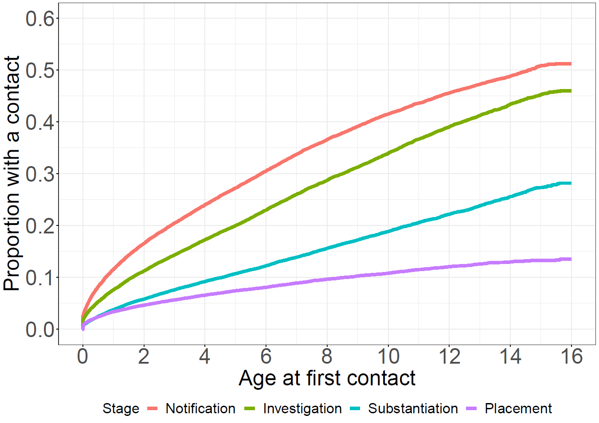
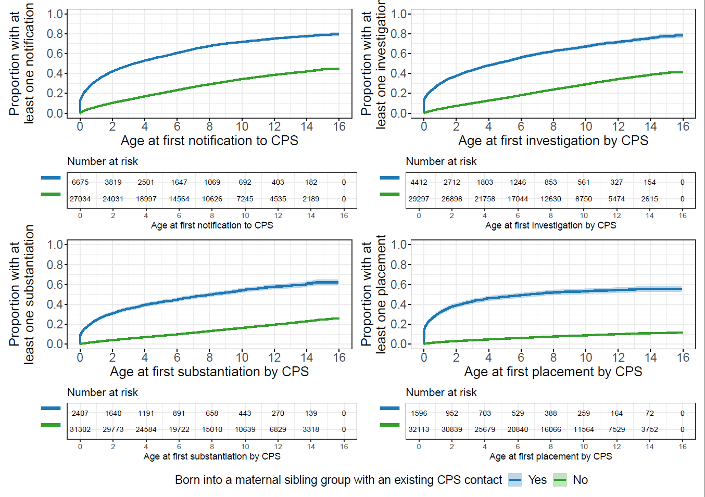
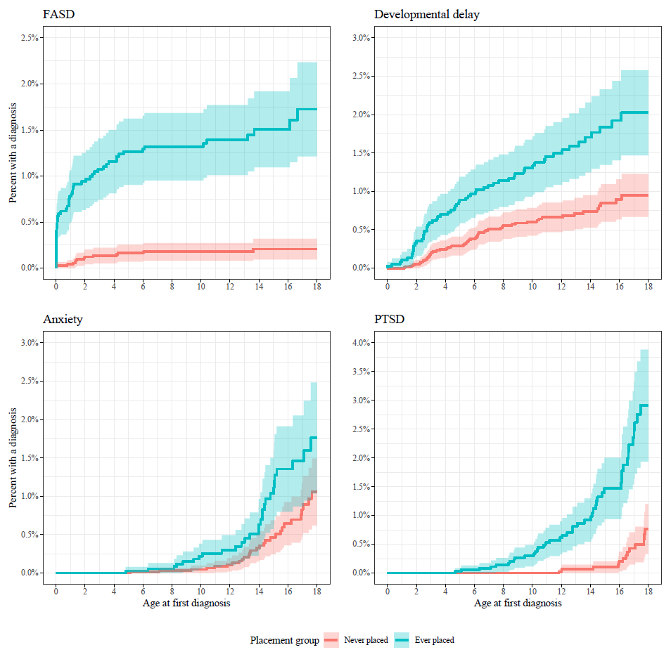
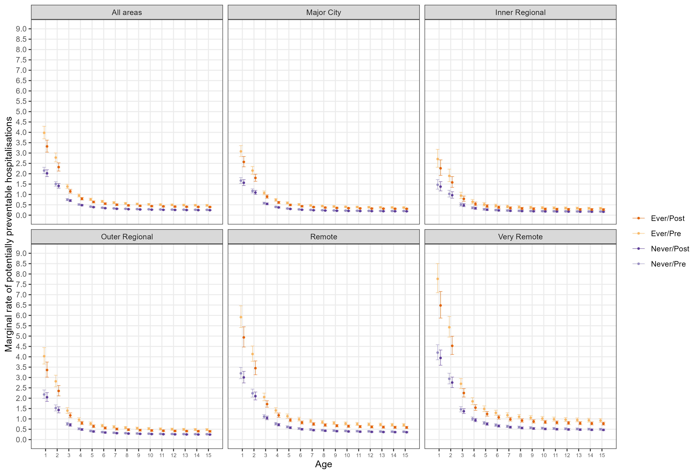

| Stage | N | % | N | % | N | % |
|---|---|---|---|---|---|---|
| Notification | 6195 | 64.1% | 1085 | 11.2% | 2390 | 24.7% |
| Investigation | 5708 | 60.0% | 1177 | 12.4% | 2628 | 27.6% |
| Substantiation | 3442 | 57.7% | 616 | 10.3% | 1911 | 32.0% |
| Placement | 2023 | 64.7% | 260 | 8.3% | 846 | 27.0% |
The Health of Aboriginal Children in Western Australia in the Context of the Child Protection System
MSPGH PhD Completion Seminar
academia
research
phd
I presented my PhD completion seminar to the Melbourne School of Population and Global Health on the 10th of May, 2024. I’ve included the recording of the seminar here and the content from the slides is beneath. If you have any questions feel free to reach out!
Introduction
Child removals
Aboriginal and Torres Strait Islander children are over-represented in child protection statistics in every state and territory1
Risk of entering out-of-home care increased by:
Health
Aboriginal and Torres Strait Islander children also have inequitable health outcomes:
Attributable to housing, SES, systemic racism
- Colonisation
Data gaps
Current research examines child protection and health independently, little on the intersection of these topics.
Of the studies that do exist, they either:
- Examine how health predicts child protection involvement2,11,12
- Examine specialist referrals at hospital clinics13–16 and Aboriginal Medical Services17–19
No studies quantifying specific health needs for Aboriginal children in out-of-home care or comparing to other Aboriginal children.
I-CaRe WA study
Principal Investigator: Professor Sandra Eades
Qualitative objectives
- Explore views from Aboriginal kinship carers
- Explore views from Aboriginal primary healthcare staff
Quantitative objectives
- Examine contemporary WA child protection data
- Identify predictors of out-of-home care
- Describe the health of the children before and after entering care
My PhD
- Introduction and literature review
- Methodology
- Descriptive analysis of trends in the child protection system
- Prevalence of mental and neurodevelopmental health conditions
- Rates of potentially preventable hospitalisations
- Discussion
Informed by qualitative research findings and reference group discussions
Supervisors:
- Prof Sandra Eades (University of Melbourne)
- Prof Melissa O’Donnell (University of South Australia)
- Dr Alison Gibberd (University of Melbourne)
- Dr Koen Simons (University of Gothenburg)
Data
Data linkage
Provided by Data Linkage Services Western Australia (DLSWA)
Probabilistic matching to link individual records across datasets20,21
All Aboriginal children born in Western Australia between 2000 and 2013
Data covering 2000 to 2019
Data sources
- Birth registrations
- Midwives Notification System
- Death registrations
- Child Protection and Family Support Data
- Hospital Morbidity Database Collection
- Emergency Department Database Collection
- WA Register of Developmental Anomalies - Birth defects
- WA Register of Developmental Anomalies - Cerebral Palsy
- Intellectual Disability Exploring Answers
- Mental Health Information System
Chapter 3 - Cumulative incidence of child protection system contacts among a cohort of Western Australian Aboriginal children born 2000 to 2013
Published paper22

Aims
- Examine contacts with CPS by stage and birth cohort
- Examine how contacts are clustered within sibling groups
Methods
Data
- Child protection data from 2000 to 2015
Analysis
- Cumulative incidence
- By two-year birth cohort
- By sibling contact status
- Tabulation of timing of placements relative to first within sibling group
Cumulative incidence of first contacts with CPS, 2000 to 2015

Cumulative incidence of first contacts with CPS, 2000 to 2015, by year of birth

Siblings

Timing of contacts within maternal sibling groups, 2000-2015
Siblings
Cumulative incidence of contacts by birth relative to first contact

Chapter 4 - Mental and neurodevelopmental health needs of Aboriginal children with experience of out-of-home care: a Western Australian data-linkage study
Aims
- Estimate prevalence of mental and neurodevelopmental health conditions for ever/never placed Aboriginal children
- Examine cumulative incidence of conditions for ever/never placed children
- Compare conditions for ever placed Aboriginal children depending on when first placement occurred (pre/post 1-year old)
Methods
Matched never-placed children to ever-placed children, 2:1 on:
- Year of birth
- Remoteness area at birth23
- Index of relative socioeconomic advantage/disadvantage at birth24
Estimated prevalence of mental and neurodevelopmental conditions using:
- Hospital data
- Mental Health Information System
- Registries
Prevalence estimates for never vs. ever placed children (N=11,159)
| Condition | Never placed n=7,439 | Ever placed n=3,720 |
|---|---|---|
| Any ID/DD/CA | 2% (1.7 - 2.4) | 6.2% (5.5 - 7) |
| Autism | 0.9% (0.7 - 1.1) | 1.1% (0.8 - 1.5) |
| FASD | 0.2% (0.1 - 0.4) | 2.2% (1.7 - 2.7) |
| Developmental delay | 1% (0.8 - 1.2) | 2.2% (1.8 - 2.8) |
| Any MH | 5% (4.5 - 5.5) | 14.8% (13.7 - 16) |
| Anxiety | 1% (0.7 - 1.2) | 1.9% (1.5 - 2.4) |
| Depression | 0.7% (0.5 - 0.9) | 1% (0.7 - 1.4) |
| PTSD | 0.5% (0.4 - 0.7) | 3.6% (3 - 4.3) |
| Adjustment | 1% (0.8 - 1.2) | 3% (2.5 - 3.6) |
| Hyperkinetic | 0.1% (0.1 - 0.2) | 1% (0.7 - 1.4) |
Results

Prevalence estimates for placement pre vs. post 1-yr old (N=3,432)
| Condition | Pre 1-year n=1,098 | Post 1-year n=2,333 |
|---|---|---|
| Any ID/DD/CA | 9% (7.4 - 10.9) | 5.2% (4.3 - 6.2) |
| Autism | 1.4% (0.8 - 2.2) | 1% (0.7 - 1.5) |
| FASD | 4% (2.9 - 5.3) | 1.4% (0.9 - 1.9) |
| Developmental delay | 2.7% (1.9 - 3.9) | 2.2% (1.6 - 2.9) |
| Any MH | 13.3% (11.3 - 15.4) | 15.3% (13.8 - 16.8) |
| Anxiety | 2.5% (1.6 - 3.6) | 1.8% (1.3 - 2.4) |
| Depression | 0.9% (0.4 - 1.7) | 1% (0.7 - 1.5) |
| PTSD | 2.1% (1.3 - 3.1) | 4.1% (3.3 - 5) |
| Adjustment | 2.3% (1.5 - 3.3) | 3.3% (2.6 - 4.1) |
| Hyperkinetic | 1.3% (0.7 - 2.1) | 0.9% (0.6 - 1.4) |
Chapter 5 - Using data linkage to compare rates and types of potentially preventable hospitalisations for Aboriginal children born in Western Australia with experience of out-of-home care
Aims
- Estimate rates of potentially-preventable hospitalisations (PPHs) for ever and never-placed Aboriginal children
- Compare types of conditions diagnosed during PPHs for ever and never-placed children
- Estimate rates of PPHs for ever-placed children before and after their first placement
Methods
Matching never-placed to ever-placed children 2:1 on month-year of birth, remoteness, and socio-economic status.
Estimate incidence rate of days spent in hospital where primary diagnosis was PPH condition using child-appropriate definition25
- Rates expressed as days in hospital per 1,000 days at risk
- Rate ratios used to compare groups
Estimate effect of placement in care on rate of admissions using mixed-effects model
Incidence rate for ever and never-placed children
| Age group | Exposure | Incidence rate | IRR |
|---|---|---|---|
| 0-4 | Ever placed | 3.37 (3.33 to 3.41) | 2.2 (2.2 to 2.2) |
| 0-4 | Never placed | 1.53 (1.51 to 1.55) | |
| 5-9 | Ever placed | 0.67 (0.65 to 0.69) | 1.7 (1.6 to 1.8) |
| 5-9 | Never placed | 0.40 (0.38 to 0.41) | |
| 10-14 | Ever placed | 0.58 (0.55 to 0.60) | 2.3 (2.2 to 2.5) |
| 10-14 | Never placed | 0.25 (0.24 to 0.26) | |
| All | Ever placed | 1.74 (1.72 to 1.76) | 2.1 (2.1 to 2.2) |
| All | Never placed | 0.82 (0.81 to 0.83) | |
| a Rate per 1,000 days at risk |
Most common PPH conditions
| Diagnosis | Never | Ever | Never | Ever | Never | Ever |
|---|---|---|---|---|---|---|
| Acute Bronchiolitis | 1121 (19.4%) | 1023 (20.9%) | ||||
| Acute Rheumatic Fever | 14 (2.6%) | 21 (5.0%) | ||||
| Acute Upper Respiratory Tract Infection Excluding Croup | 623 (10.8%) | 517 (10.6%) | 77 (4.3%) | 59 (4.8%) | 41 (7.5%) | 28 (6.7%) |
| Asthma | 389 (6.7%) | 307 (6.3%) | 118 (6.6%) | 61 (4.9%) | 31 (5.7%) | 16 (3.8%) |
| Bacterial/Unspecified Pneumonia | 517 (9.0%) | 434 (8.9%) | 119 (6.6%) | 81 (6.6%) | 58 (10.6%) | 41 (9.8%) |
| Constipation | 32 (1.8%) | 33 (2.7%) | 26 (4.8%) | 12 (2.9%) | ||
| Dental (Dental Caries/Pulp/Periodontal) | 413 (7.2%) | 260 (5.3%) | 472 (26.3%) | 287 (23.3%) | 40 (7.3%) | 49 (11.8%) |
| Gastroenteritis | 989 (17.1%) | 803 (16.4%) | 101 (5.6%) | 60 (4.9%) | 36 (6.6%) | 16 (3.8%) |
| Otitis Media | 451 (7.8%) | 508 (10.4%) | 276 (15.4%) | 240 (19.5%) | 42 (7.7%) | 46 (11.0%) |
| Skin Infection | 518 (9.0%) | 457 (9.4%) | 395 (22.0%) | 244 (19.8%) | 164 (30.0%) | 108 (25.9%) |
| Urinary Tract Infection | 42 (2.3%) | 42 (3.4%) | 21 (3.8%) | 23 (5.5%) | ||
| Viral Infection Of Unspecified Site | 233 (4.0%) | 190 (3.9%) | 54 (3.0%) | 50 (4.1%) | ||
| Viral Pneumonia | 76 (1.3%) | 75 (1.5%) |
Incidence rate for pre/post first placement
| Age group | Exposure | Incidence rate | IRR |
|---|---|---|---|
| 0-4 | Post-placement | 2.34 (2.29 to 2.40) | 0.6 (0.5 to 0.6) |
| 0-4 | Pre-placement | 4.19 (4.12 to 4.26) | |
| 5-9 | Post-placement | 0.59 (0.57 to 0.61) | 0.6 (0.6 to 0.7) |
| 5-9 | Pre-placement | 0.94 (0.89 to 0.99) | |
| 10-14 | Post-placement | 0.57 (0.54 to 0.59) | 0.8 (0.6 to 0.9) |
| 10-14 | Pre-placement | 0.75 (0.65 to 0.87) | |
| All ages | Post-placement | 1.05 (1.03 to 1.07) | 0.3 (0.3 to 0.3) |
| All ages | Pre-placement | 3.17 (3.12 to 3.22) | |
| a Rate per 1,000 days at risk |
DAG

Model fit
Negative binomial regression with random intercepts
Count ~ Exposure + Pre_Post + Exposure*Pre_Post + log(Age) + I(Age^0.5) + Remoteness + IRSAD + (1 | id) + offset(log(Followup))
Estimated average causal effect: IRR 0.89 (95% CI 0.82 - 0.97)
Marginal rates per 1,000 days at risk across follow-up

Marginal rates per 100,000 days at risk by condition

Bringing it together
Summary
- Rates of contact with CPS have been occurring at younger ages for children born more recently
- Contacts are clustered within sibling groups and risk carries over to siblings born later
- Prevalence of mental and neurodevelopmental health ~3x higher for children in OOHC compared to children never removed
- Prevalence of neurodevelopmental health conditions ~2x higher for children removed before the age of one than children first removed after the age of one
- Rates of PPHs are higher for ever-placed children across all ages
- Rates remain higher compared to never-placed children, even after CPS intervention
- Placement in care has largest impact on PPHs in first few years of life
Child protection implications
- Parents with children removed need more support
- We know they are at increased risk of future children being removed
- Reunification and prevention of future removals
- Support needs to be culturally safe
- Input from Aboriginal people and Elders important in decision making process
- Staff within child protection system
- Aboriginal family-led decision making
- Assigning child protection responsibilities to Aboriginal agencies
Health implications
Children with experience of out-of-home care often have multiple, complex health needs
- Public health system capacity is an issue (for everyone)
- Availability of affordable general practice
- Lengthy wait times for specialist care
- Increase in culturally competent medical professionals
- Reducing risk of PPHs
- Improvements in housing
- Access and availability of healthcare
- Transport
- Wait times
- Cost
What this contributes
- Addresses research gap
- “We already knew this”
- Quantifies some intersections of child protection and health
- Prioritising Aboriginal voices in the research process
- Laying groundwork for future research
- Disaggregation by region
- Building on DAG, include broader datasets
- Estimating effects of policy changes
- Measuring informal care
Research translation activities
- Translational workshops with community, government stakeholders, peak bodies
- Presentations to staff at NSW and WA child protection offices
- Presentation at International Population Data Linkage Conference 2022
- Infographics and lay summaries
- Open-access publications
Acknowledgements
Data custodians
I wish to thank the staff at DLSWA and the custodians of the Birth registrations, Midwives Notification System, Death registrations, Child Protection and Family Support Data, Hospital Morbidity Database Collection, Emergency Department Database Collection, WA Register of Developmental Anomalies - Birth defects, WA Register of Developmental Anomalies - Cerebral Palsy, Intellectual Disability Exploring Answers, Mental Health Information System.
The information presented does not reflect the views of the Data Linkage Branch or any of the data custodians.
Thanks
- Supervisory team
- PhD cohort
- Family and friends
- Community reference group
References
1.
Australian Institute of Health and Welfare. Child protection Australia 2020-21. Canberra: AIHW; 2022.
2.
O’Donnell M, Nassar N, Leonard H, Jacoby P, Mathews R, Patterson Y, et al. Characteristics of non-Aboriginal and Aboriginal children and families with substantiated child maltreatment: a population-based study. International journal of epidemiology. 2010 Jun;39(3):921–8.
3.
O’Donnell M, Maclean M, Sims S, Morgan V, Leonard H, Stanley F. Maternal mental health and risk of child protection involvement: mental health diagnoses associated with increased risk. Journal of Epidemiology and Community Health [Internet]. 2015 Dec;69(12):1175 LP–1183. Available from: http://jech.bmj.com/content/69/12/1175.abstract
4.
Jenkins BQ, Tilbury C, Hayes H, Mazerolle P. Factors associated with child protection recurrence in Australia. Child Abuse & Neglect [Internet]. 2018;81:181–91. Available from: http://www.sciencedirect.com/science/article/pii/S0145213418301984
5.
Orr C, Fisher C, Sims S, Preen D, Glauert R, O’Donnell M. Hospitalisations for maternal assault are associated with increased risk of child protection involvement. Child Abuse & Neglect [Internet]. 2019;95:104014. Available from: http://www.sciencedirect.com/science/article/pii/S0145213419301759
6.
Segal L, Nguyen H, Mansor M, Gnanamanickam E, Doidge J, Preen D, et al. Lifetime risk of child protection system involvement in South Australia for Aboriginal and non-Aboriginal children, 1986–2017 using linked administrative data. Child Abuse & Neglect [Internet]. 2019;97:104145. Available from: http://www.sciencedirect.com/science/article/pii/S0145213419303229
7.
Davis M. Family is culture, final report: Independent review into Aboriginal out-of-home care in New South Wales. 2019; Available from: https://www.familyisculture.nsw.gov.au/__data/assets/pdf_file/0011/726329/Family-Is-Culture-Review-Report.pdf
8.
Wilson RD, Wilkie M. Bringing them home: Report of the national inquiry into the separation of Aboriginal and Torres Strait Islander children from their families. Sydney, Australia: Human Rights; Equal Opportunity Commission; 1997.
9.
Australian Institute of Health and Welfare. Australia’s children. Cat. no. CWS 69. Canberra: AIHW; 2020.
10.
Australian Institute of Health and Welfare. National Healthcare Agreement: PI 18–Selected potentially preventable hospitalisations. Canberra: AIHW; 2022.
11.
O’Donnell M, Nassar N, Leonard H, Hagan R, Mathews R, Patterson Y, et al. Increasing prevalence of neonatal withdrawal syndrome: population study of maternal factors and child protection involvement. Pediatrics. 2009 Apr;123(4):e614–21.
12.
O’Donnell M, Nassar N, Leonard H, Jacoby P, Mathews R, Patterson Y, et al. Rates and types of hospitalisations for children who have subsequent contact with the child protection system: a population based case-control study. Journal of Epidemiology and Community Health [Internet]. 2010 Sep;64(9):784 LP–788. Available from: http://jech.bmj.com/content/64/9/784.abstract
13.
Kaltner M, Rissel K. Health of australian children in out-of-home care: Needs and carer recognition. Journal of Paediatrics and Child Health. 2011;47(3):122–6.
14.
Arora N, Kaltner M, Williams J. Health needs of regional a ustralian children in out-of-home care. Journal of Paediatrics and Child Health. 2014;50(10):782–6.
15.
Nathanson D, Tzioumi D. Health needs of australian children living in out-of-home care. Journal of paediatrics and child health. 2007;43(10):695–9.
16.
McLean K, Hiscock H, Goldfeld S. Timeliness and extent of health service use by victorian (australian) children within first year after entry to out-of-home care: Retrospective data linkage cohort study. Children and Youth Services Review. 2022;134:106359.
17.
Raman S, Reynolds S, Khan R. Addressing the well-being of Aboriginal children in out-of-home care: Are we there yet? Journal of Paediatrics and Child Health [Internet]. 2011;47(11):806–11. Available from: https://onlinelibrary.wiley.com/doi/abs/10.1111/j.1440-1754.2011.02030.x
18.
Raman S, Ruston S, Irwin S, Tran P, Hotton P, Thorne S. Taking culture seriously: Can we improve the developmental health and well-being of Australian Aboriginal children in out-of-home care? Child: Care, Health and Development [Internet]. 2017;43(6):899–905. Available from: https://onlinelibrary.wiley.com/doi/abs/10.1111/cch.12488
19.
Shmerling E, Creati M, Belfrage M, Hedges S. The health needs of Aboriginal and Torres Strait Islander children in out-of-home care. Journal of Paediatrics and Child Health [Internet]. 2020;56(3):384–8. Available from: https://onlinelibrary.wiley.com/doi/abs/10.1111/jpc.14624
20.
Holman CDJ, Bass JA, Rosman DL, Smith MB, Semmens JB, Glasson EJ, et al. A decade of data linkage in Western Australia: strategic design, applications and benefits of the WA data linkage system. Australian Health Review. 2008;32(4):766–77.
21.
Eitelhuber TW, Thackray J, Hodges S, Alan J. Fit for purpose - developing a software platform to support the modern challenges of data linkage in Western Australia. International Journal of Population Data Science [Internet]. 2018;3(3). Available from: https://ijpds.org/article/view/435
22.
Harrap B, Gibberd A, O’Donnell M, Simons K, Jones J, Lima F, et al. Cumulative incidence of child protection system contacts among a cohort of western australian aboriginal children born 2000 to 2013. Child Abuse & Neglect. 2023;143:106297.
23.
Australian Bureau of Statistics. Australian statistical geography standard (ASGS): Volume 5–remoteness structure [Internet]. Australian Bureau of Statistics Canberra; 2016b. Available from: https://www.abs.gov.au/ausstats/abs@.nsf/Latestproducts/1270.0.55.005Main%20Features10July%202016
24.
Australian Bureau of Statistics. Technical paper: Socio-economic indexes for areas (SEIFA). Canberra: Commonwealth of Australia [Internet]. 2016a; Available from: https://www.ausstats.abs.gov.au/ausstats/subscriber.nsf/0/756EE3DBEFA869EFCA258259000BA746/$File/SEIFA%202016%20Technical%20Paper.pdf
25.
Anderson P, Craig E, Jackson G, Jackson C. Developing a tool to monitor potentially avoidable and ambulatory care sensitive hospitalisations in new zealand children. The New Zealand Medical Journal (Online). 2012;125(1366).